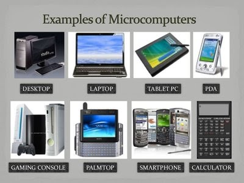

Computer HardwareIt refers to the physical components that a computer system requires to function or the physical elements that comprise a computer system. It includes the physical parts or components of a computer, such as the case, Central Processing Unit, monitor, mouse, keyboard, computer storage (e.g., hard disk drive), memory, graphics card, sound card, printers, speakers, motherboard, and others. It refers to the physical, tangible computer equipment and devices, which provide support for major functions such as input, processing (internal storage, computation and control), output, secondary storage (for data and programs), and communication. Notes:
Types of Computers or Computer SystemsSupercomputersThe fastest and the most expensive computers. These huge computers are used to solve very complex science and engineering problems. They get their processing power by taking advantage of parallel processing; they use lots of CPUs at the same time on one problem. A typical supercomputer can do up to ten trillion individual calculations every second. Examples:
MainframesThese are computers that are similar to supercomputers in many aspects, the main difference between them is the fact that a supercomputer uses all its raw power to focus on very few tasks, while the purpose of a mainframe is to perform thousands or millions of operations concurrently. They are often employed by large organizations for bulk data processing, such as census, industry and consumer statistics, enterprise resource planning, and transaction processing.
Minicomputers (Mid-range computers)These are computers that are smaller, less expensive, and less powerful than a mainframe or supercomputer, but more expensive and more powerful than a personal computer. They are small and inexpensive computers that do the same tasks as a mainframe computer with limited extent. They are a type of server that can support computer networks and enable users to share files, software, and other resources.
PDP-11 MicrocomputersThese are small, relatively inexpensive computers with a microprocessor as their Central Processing Unit (CPU). These computers use a single microprocessor for its CPU, which performs all logic and arithmetic operations. These are electronic devices that were designed for individual use.  Server ComputerIt refers to a central computer that contains collections of data and programs. It is a computer that provides resources, data, services, or programs to other computers, known as clients, over a network. WorkstationsThese are high-end, expensive computers that are made for more complex procedures and are intended for one user at a time. These are special computers designed for technical or scientific applications that are intended primarily to be used by one person at a time.
Basic Data Flow Between Hardware Devices
Operations performed by a computer system:
InputIt means to provide or give something to the computer, in other words, when a computer or device is receiving a command or signal from outer sources, the event is referred to as input to the device. It refers to any data or information that are sent to a computer for processing. It is the manner of entering data and programs into the computer system. Examples of input devices: keyboard, mouse, joystick, microphone, scanner, web cam, and many others.
ProcessingIt is the task of performing operations like arithmetic and logical operations. Example: Microprocessor or CPU that is responsible for handling all instructions and calculations it receives from other hardware components in the computer and software programs running on the computer.
OutputIt is a term that is used to refer to the data generated by a computer and it includes data produced at a software level, such as the result of a calculation, or at a physical level, such as a printed document. Examples of output devices: monitor, printers, and many others.
StorageIt is a technology consisting of computer components and recording media that are used to retain digital data. It is a core function and fundamental component of computers. Examples: Hard Disk, RAM, and others.
|

 Sierra
Sierra